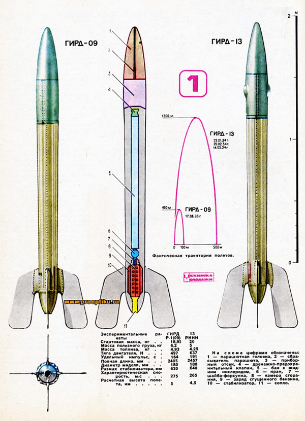
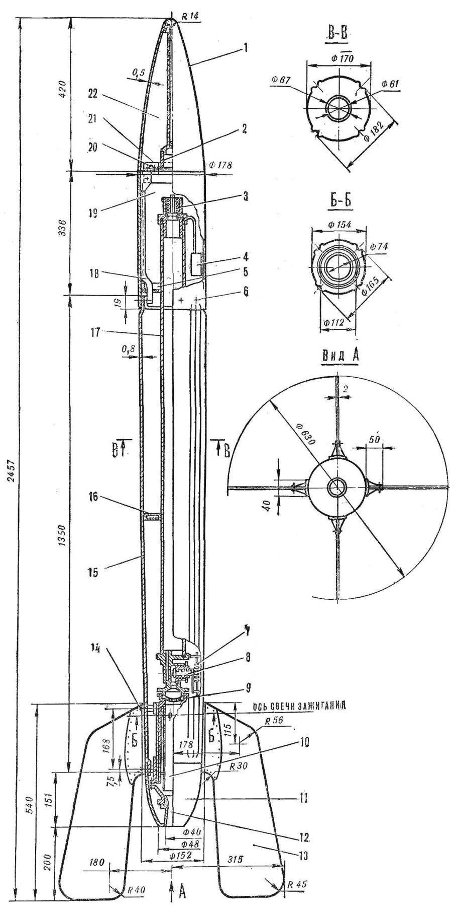

Первая ракета
Музей истории ГИРД
Нахабинская СОШ №2

Музей истории ГИРД
Нахабинская СОШ №2
.gif)
В 1933 году с полигона в Нахабино Московской области были запущены ГИРД-09 и ГИРД-Х — первые советские экспериментальные ракеты с жидкостным ракетным двигателем. Ракеты были созданы в Группе изучения реактивного движения (ГИРД) под руководством Сергея Павловича Королева по проекту и расчетам Фридриха Артуровича Цандера. Ракета состояла из пяти отсеков. В первом находился парашют с выбрасывающим устройством, во втором – кислородный бак, в третьем – баллон со сжатым воздухом и пусковая арматура, в четвёртом - бак для спирта, в пятом – двигатель. Стартовая масса ракеты - 29,5 кг, масса - топлива 8,3 кг, длина - 2,2 м. Двигатель 10 с вытеснительной подачей топлива (жидкий кислород и этиловый спирт) имел тягу 0,7-0,8 кН. Ракета взлетела вертикально на высоту 75-80 м, по современным меркам невысоко, но даже такое достижение означало успех! В музее ГИРД представлены макеты ракет «ГИРД-09» и «ГИРД-Х», изготовленные в натуральную величину и фотография, на которой запечатлены участники запуска ракеты ГИРД-Х. Среди них С.П. Королёв, будущий Главный конструктор ракетно-космических систем.
 .jpg)